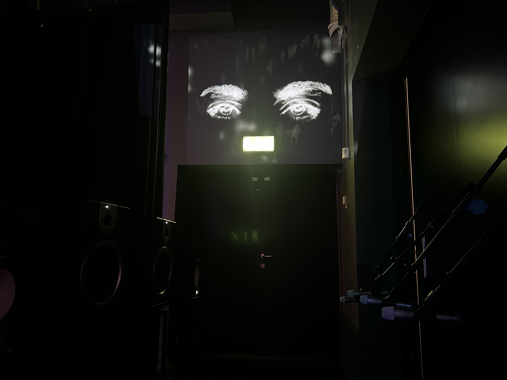
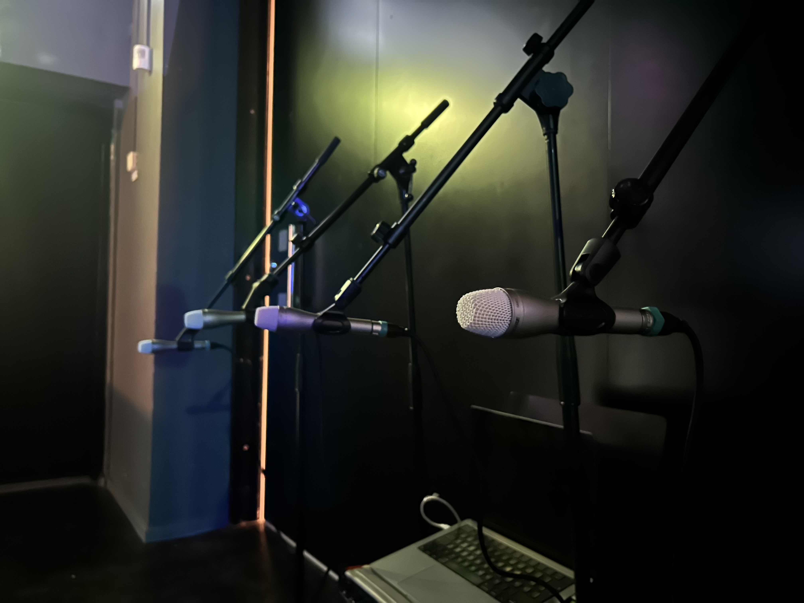
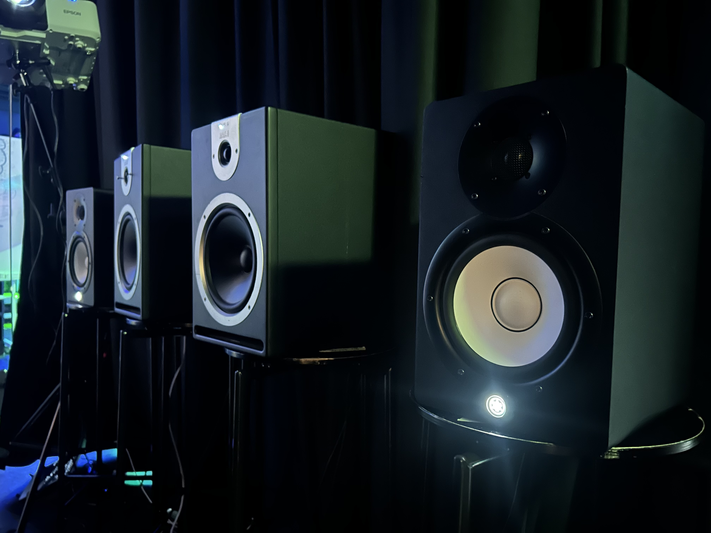
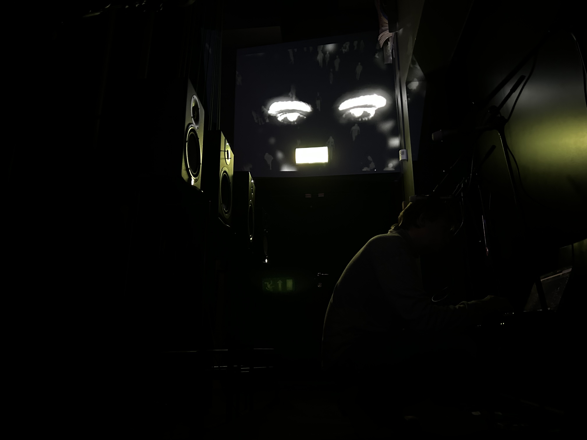
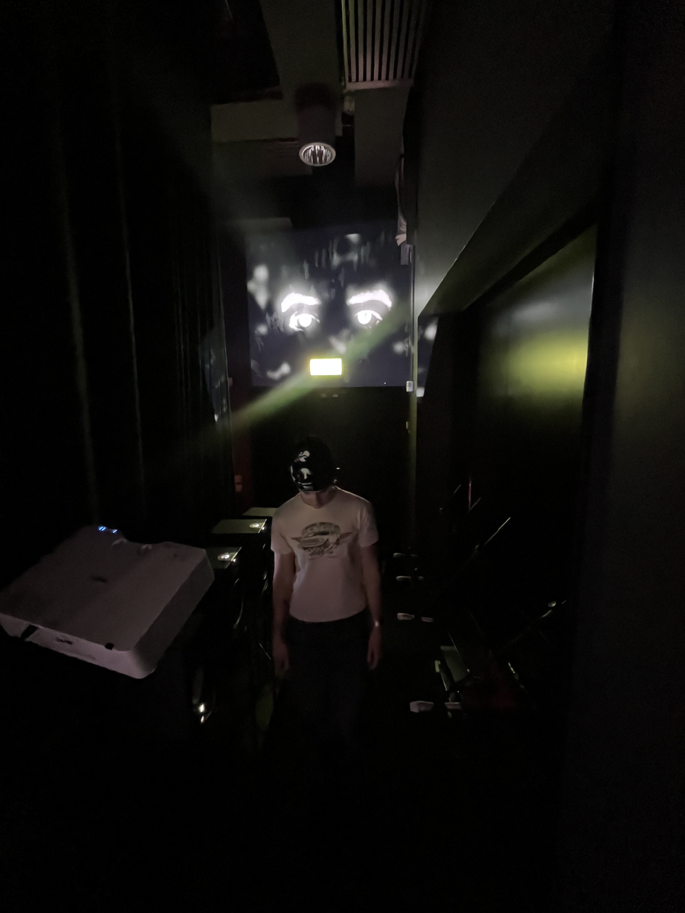

Creative programming / 2026
I SAW YOU COME IN.
Interactive audiovisual installation
About the project
Created by Dmytro Parinov and Otto Ekerman, I SAW YOU COME IN is an interactive audiovisual installation exploring how the fear of leaving digital traces shapes our behaviour. A hallway of microphones and opposing speakers surrounds visitors with an ambient loop, while glitching eyes watch from an overhead projection. Walking through the space, visitors interrupt the sound with their bodies, transforming both audio and imagery. Built in Max MSP and TouchDesigner, the installation makes presence perceptible through disruption. Each user's passing through the hallway becomes part of the work, prompting the question: how freely can we move and act when we know our presence leaves a trace?
Photographs




